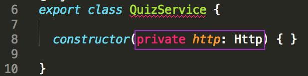
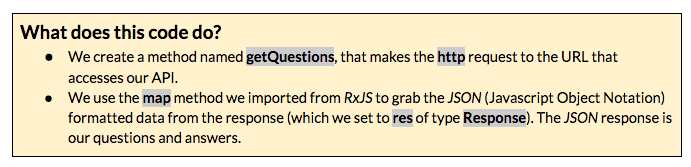
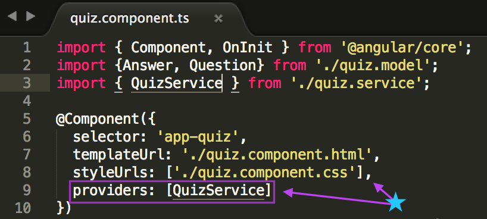
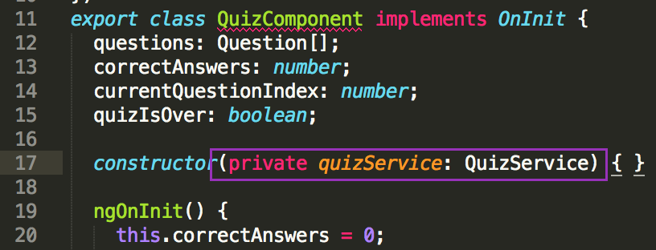
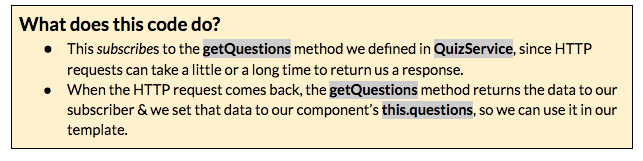

Part 6: Creating a Service & Fetching Data
You have your component set-up to display trivia questions and answers, but you only have a couple hardcoded questions & answers. Next you'll use an API to populate your quiz questions and possible answers.
A service is just one piece of your larger application. Services are used to:
- share data or logic across multiple components of an application to avoid code duplication
- encapsulate external interactions (like with our API).
First, use Angular CLI to generate a service named quiz within the quiz directory. In Git Bash or iTerm2, type:
ng g service quiz/quizThis creates two files in your src/app/quiz directory:
- quiz.service.ts and
- quiz.service.spec.ts
You won't be adding any tests tonight, so you can ignore the quiz.service.spec.ts file.
We're going to use an HTTPClient Module that Angular provides, but we need to tell Angular that we want to use it. In Atom, open the app.module.ts file.
Below the
import {NgModule} from '@angular/core';, add a new line & type:import { HttpClientModule } from '@angular/common/http';In the same file, look for
importssection within the parameters passed to@NgModule. Add a comma afterBrowserModule& add a new line. On this new line, type:HttpClientModule
In Atom, open the src/app/quiz/quiz.service.ts file.
We need to import a method from the HttpClientModule and our Question model.
Place your cursor at the end of the first line of the file that reads
import { Injectable } from '@angular/core';and press return.Type:
import { HttpClient } from '@angular/common/http';Press return to move to a new line and then type:
import { Question } from './quiz.model';On the line that starts with
constructor(), place your cursor in between the parenthesis and type:private http: HttpClient
TODO: UPDATE IMAGE 
This creates an instance of the
HttpClientservice that you imported and assigns it tohttp. It’s private because you don’t want to access it from outside theQuizServiceclass.- Now, you’re going to add your API request to //cocktail-trivia-api.herokuapp.com/api/sample. Copy the code below:
getQuestions(): Observable<Question[]> { return this.http.get<Question[]>('//cocktail-trivia-api.herokuapp.com/api/sample'); }- Paste the code in the src/app/quiz/quiz.service.ts file just below the
constructor(private http: Http) { }line
TODO: UPDATE IMAGE 
In Atom, open the src/app/quiz/quiz.component.ts file.
You need to import the
QuizService, so that you can use it. Add the following to the list of your other imports:import { QuizService } from './quiz.service';In our
Componentmetadata, you need to addQuizServiceas a provider. Add a comma & a new line afterstyleUrls: ['./quiz.component.css']and add:providers: [QuizService]

- In the parenthesis for
constructor() { }add:private quizService: QuizService

Now, you can access the
QuizService methodsviathis.quizService.Replace
this.questions = [...];with:this.quizService.getQuestions() .subscribe(questions => this.questions = questions);
